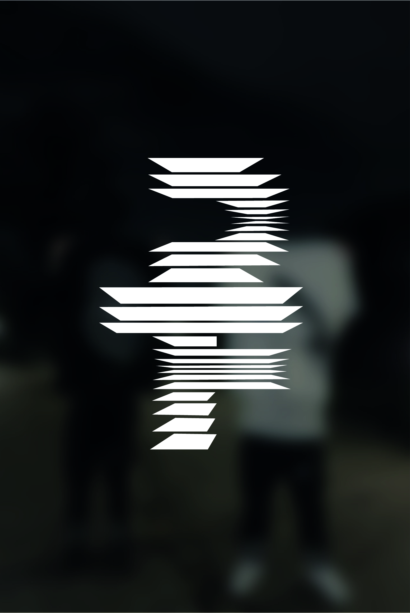

Quienes somos
Powered By GOD
CREW
"PORTOFINO es más que una marca de ropa; es una experiencia. Nos dedicamos a crear prendas de streetwear de alta calidad, utilizando los mejores materiales y procesos de fabricación. Cada detalle, desde el diseño hasta la costura, está pensado para ofrecerte comodidad y durabilidad. Al elegir PORTOFINO, no solo adquieres una prenda, sino que te unes a una comunidad que valora la autenticidad y el buen gusto."

La espiritualidad y la moda, aunque parezcan mundos distintos, pueden entrelazarse de manera profunda y significativa. Al hablar de la espiritualidad de una marca como PORTOFINO, no necesariamente estamos vinculando la ropa con una religión específica, sino más bien con conceptos universales como la conexión, la identidad y la expresión personal.
Nacida en el corazón de Colombia, PORTOFINO es una marca de streetwear que celebra la diversidad y la creatividad. Inspirados en la energía vibrante de nuestras ciudades y la riqueza cultural de nuestro país, diseñamos prendas que te permiten expresar tu individualidad con estilo y confianza. Cada colección es una fusión de lo urbano y lo sofisticado, creada con materiales de alta calidad y una atención meticulosa a los detalles. En PORTOFINO, creemos que la moda es una forma de arte y una herramienta para conectar con los demás. Únete a nuestra comunidad y descubre un nuevo nivel de estilo.